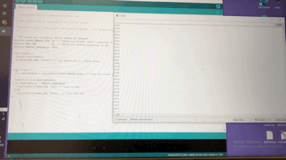
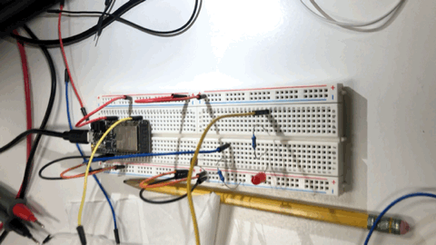
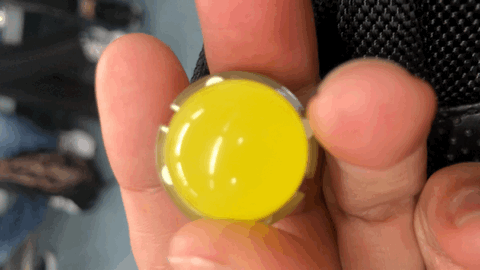

CONTINUE EXPERIMENTING WITH THE THIRD EYE MINIROBOT
UNDERSTANDING HOW THE MECHANISM WORKS
STEP BY STEP IN ARDUINO
The first part was understanding the LED and if it could be manage with the photosensor to turns on or turn off. We can check in the arduino, the numbers and graphics of this variations.

Then we change the programming, instead of turn off with no light, it turns on with more light, in order to do that we require to lumens of the lamp of a cellphone and test it.
FIRST START WITH THE LEDS
WHEN YOU LIGHT THE LED WITH THE LAMP OF A CELLPHONE IT TURNS ON 
THE PROGRAMED CODE IS WORKING

THE WHEELS AND THE MOTOR
UNDERSTANDING HOW THE MOTOR MIGHT MOVE WHEELS
Now that all electronics and programming parts works, the next step is put all the items into the mockup, and test it.

THE THIRD EYE
LOOKING FOR THE DATA SHEET OF THE BIG LED
This is a LED that will be replace the basic one, but it works different, it seems like it was the energy of three LEDs in one item.
WORKING PROGRESS
EL TERCER OJO MOCKUP
WORKING PROGRESS